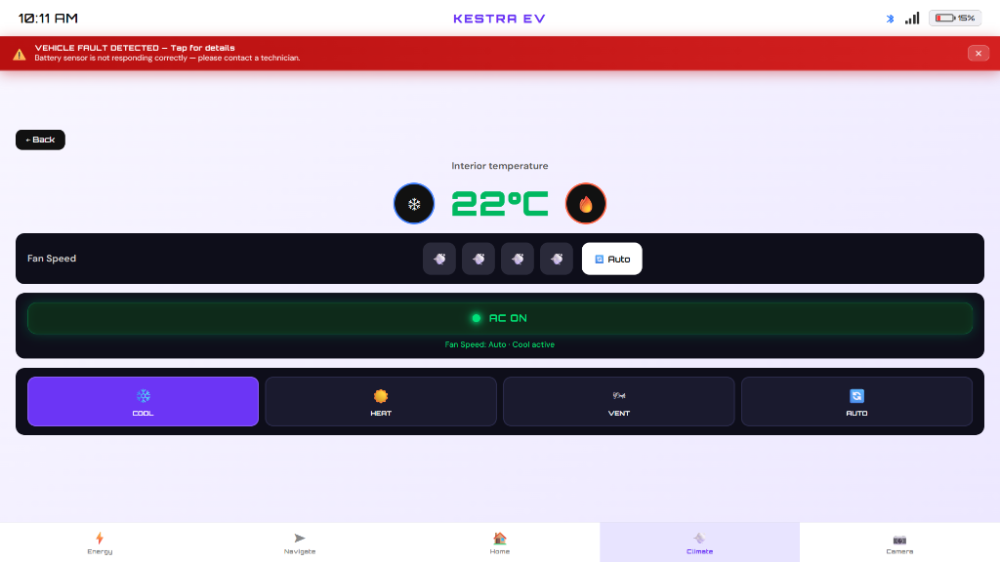
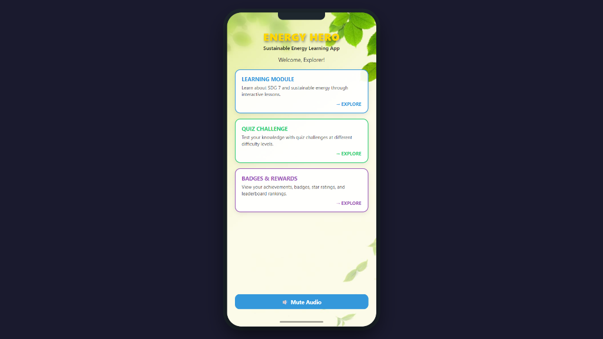
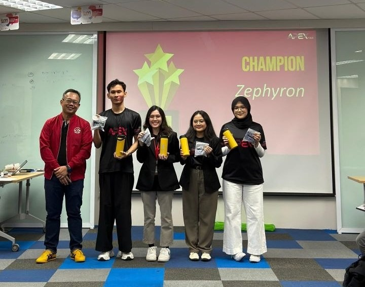
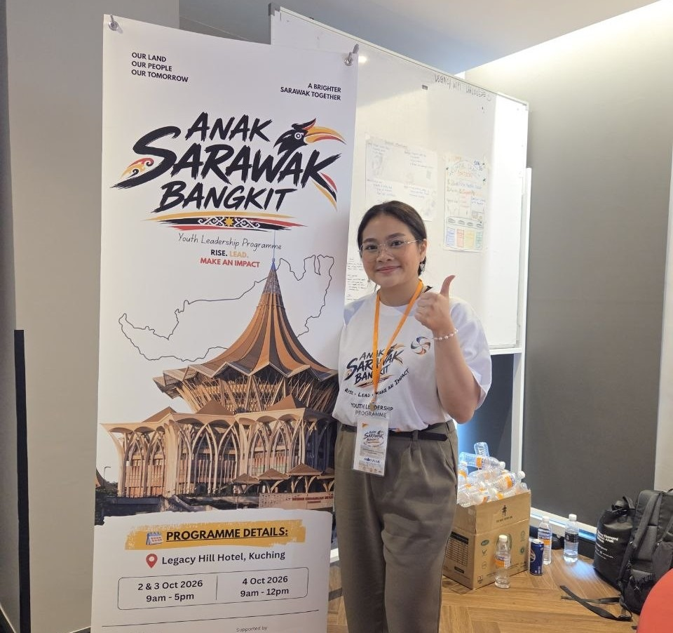
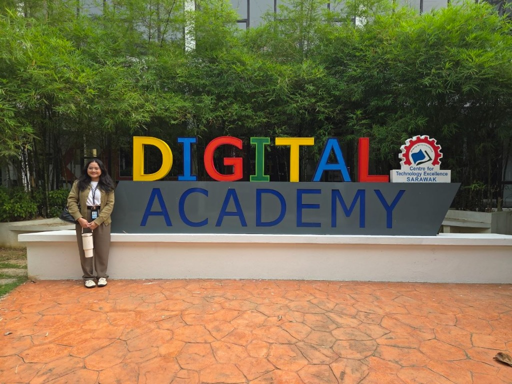
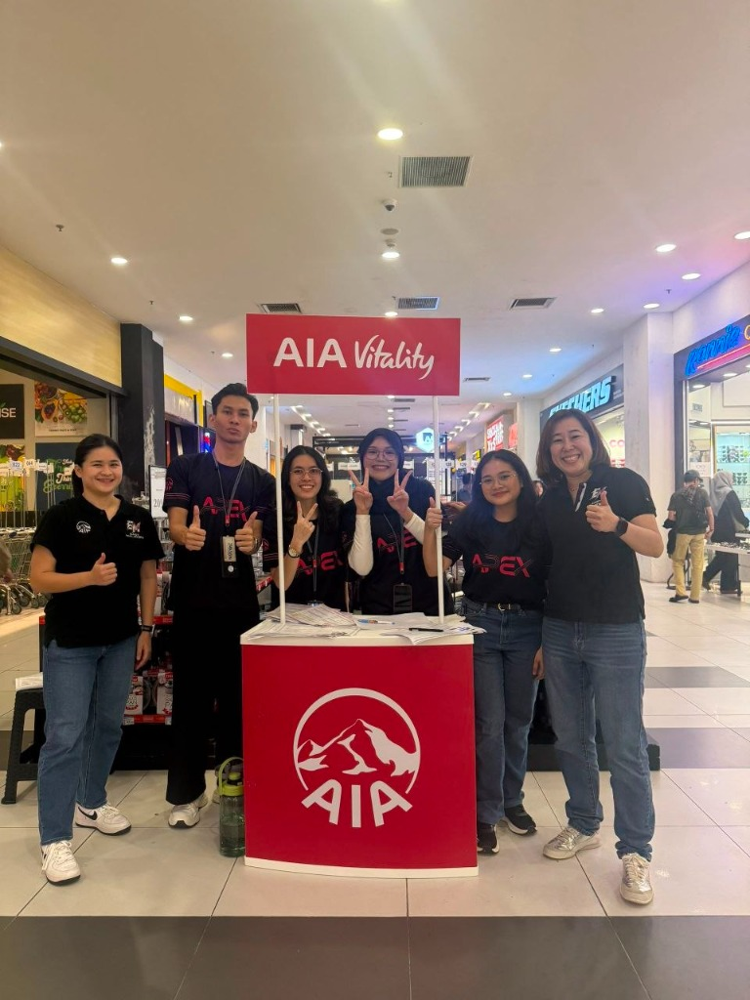
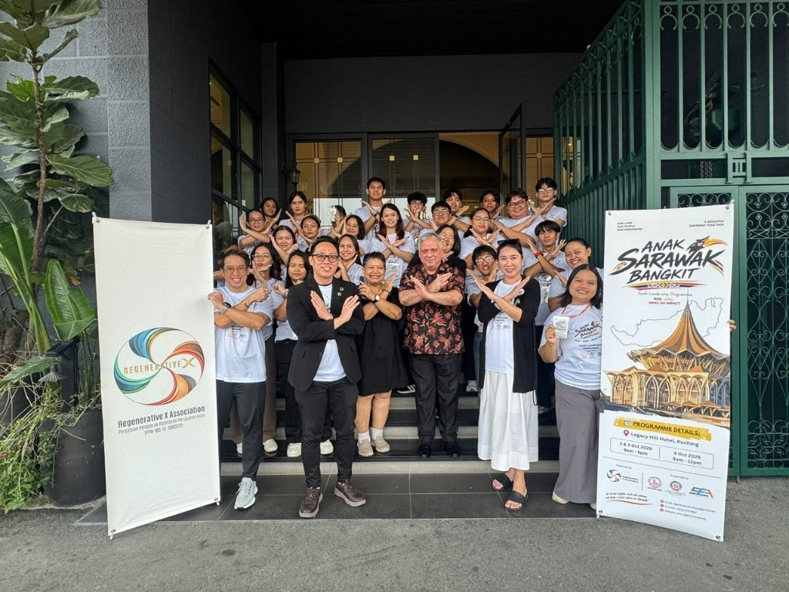
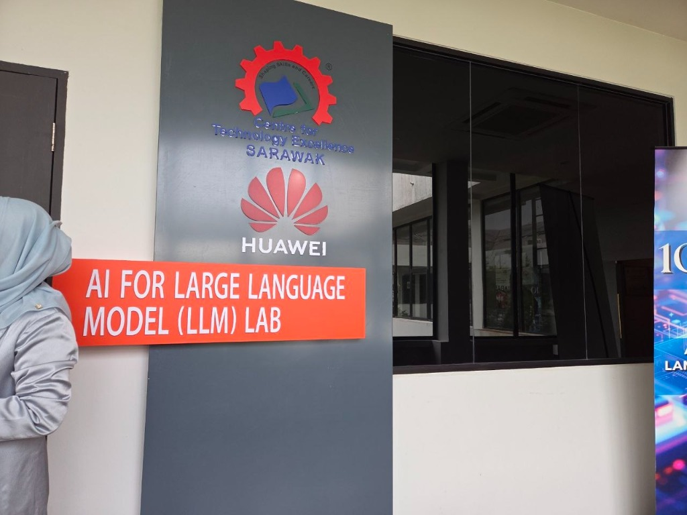
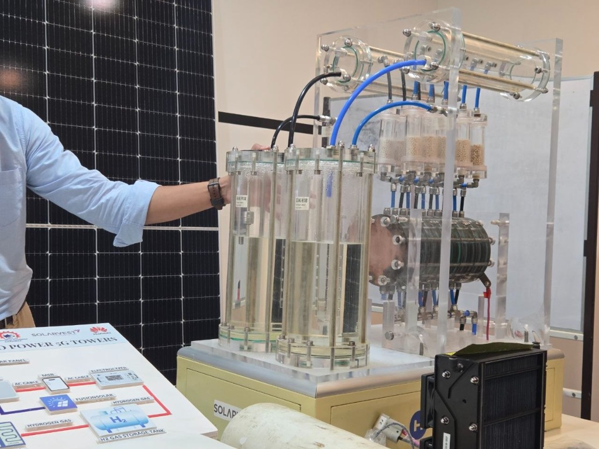
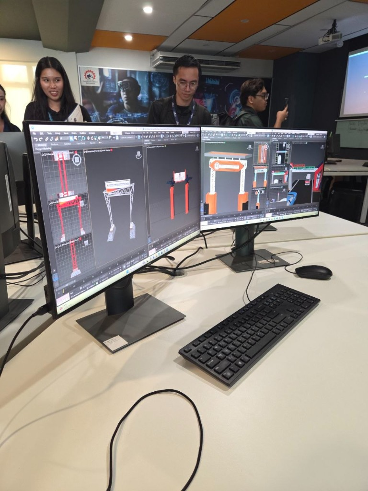

Designing systems, securing data, and connecting digital ideas.
I'm Marcella, a Network Computing undergraduate at Universiti Malaysia Sarawak. I focus on computer networking, infrastructure security, and applied software systems.
I balance technical systems engineering with creative storytelling, sharing lifestyle & reading on TikTok (@cellanotes) and makeup & tech shares on Shopee.
Academic coursework, system architectures, and exploratory side projects demonstrating hands-on technical problem solving, teamwork, and user-centric design.

UI/UX · Coursework2026
Kestra EV Interface
EV Dashboard Redesign for Sarawak Pan Borneo Drivers
Tailored for electric vehicle drivers traversing long distances on the Pan Borneo Highway, featuring real-time battery analytics, glare-resistant dark mode, and charging accessibility.
FigmaUI/UXWebSocketsVanilla JS
01 / CASE STUDY
Kestra EV Dashboard
A custom digital cockpit designed for electric vehicle drivers traveling along remote stretches of the Sarawak Pan Borneo Highway, where charging infrastructure is sparse.
Architecture & Thinking
Real-time telemetry: Telemetry streams (battery state, charge rate, cabin temperature) render instantly with low overhead via WebSockets and HTML5 Canvas.
Night driving ergonomics: High-contrast palette calibrated to prevent glare during evening drives while maintaining readability in strong tropical sun.
Team Collaboration
Collaborated with 10 classmates to ensure interface usability, test dashboard animations across resolutions, and verify range estimation algorithms.
Key Outcomes
Led mock design iterations, synthesized team feedback, and produced a responsive interface with real-time route charging guidance.

Java · Coursework2026
EcoEnergy Java App
Renewable Energy Educational & Quiz Platform
Desktop learning application built in Java promoting clean energy awareness (UN SDG 7) with dynamic quiz modules, interactive calculators, and persistent score tracking.
JavaJavaFXOOPMVC
02 / CASE STUDY
EcoEnergy Quiz App
Java object-oriented software engineered to educate university peers on United Nations Sustainable Development Goal 7 (Affordable and Clean Energy).
Architecture & Thinking
MVC Pattern: Decoupled UI presentation from business logic using JavaFX and custom event listeners.
Fault tolerance: Implemented robust exception handling to prevent runtime crashes during unexpected inputs.
Persistence: Saved user performance history locally using structured JSON file serialization.
Team Collaboration
Worked alongside 3 teammates to verify renewable energy calculation models and implement fluid interface transitions.
Key Outcomes
Authored core architectural classes including MainGUI.java, UIHandler.java, and EnergyHeroException.java.
A lightweight zero-dependency authenticator exploring RFC 6238 time-based one-time passwords (TOTP) with native browser Web Crypto API and isolated cryptographic vaults.
Web CryptoHMAC-SHA256RFC 6238Vanilla JS
03 / CASE STUDY
MFA Authenticator
An investigation into client-side cryptography and zero-trust authentication mechanisms independent of centralized authentication backends.
Architecture & Thinking
Computes TOTP codes in-browser using standard Web Crypto HMAC-SHA256 primitives. Implements constant-time string comparison to defend against timing attacks and stores temporary credentials in memory-only scope.
Security & Outcomes
Modeled common network attack surfaces with security peers, implementing automatic clipboard sanitization and accessible QR code generation.
A digital skincare companion analyzing cosmetic ingredient incompatibilities (e.g. retinol vs AHA/BHA conflicts), UV index forecast matching, and skin progress logs.
HTML5CSS GridREST APIActive Build
In Development
04 / CASE STUDY
Skin Bloom
Demystifying complex dermatological formulations so everyday consumers can build safe, science-backed personal care routines.
Architecture & Thinking
Engineered with an editorial, minimalist aesthetic. Features AM/PM routine checklists, ingredient synergy checks, and client-side offline storage for private skin diaries.
Status & Collaboration
Currently validating cosmetic toxicology datasets and iterating UI components based on peer user testing.
Applied AI · Prototype2026
MindBridge AI Health
Empathetic Mental Wellness & AI Triage Assistant
A privacy-first AI companion providing empathetic mental health support, zero-storage mood logging, healthcare summary exports, and automated emergency crisis escalation.
Generative AINLPSentimentVanilla JS
05 / CASE STUDY
MindBridge AI Health
A confidential wellness platform designed to offer students and young adults a secure place to reflect on emotional well-being.
Architecture & Thinking
Adheres to zero-knowledge processing where conversation contexts are ephemeral. Keyword distress heuristics trigger emergency contact resources without third-party data transmission.
Outcomes
Developed structured clinical summary generators that allow users to export formatted PDF reports for counselors or therapists.
Web Standards · Independent2026
Portfolio Architecture
Designing with AI Pairing & Clean Minimalist Standards
An iterative web engineering case study exploring human-agent pair programming, minimalist typographic systems, zero-dependency performance, and WCAG accessibility.
HTML5CSS GridModern JSAI Pairing
06 / CASE STUDY
Portfolio Engineering
A practical demonstration of collaborative human-and-AI pair programming, producing clean, resilient code without heavy framework overhead.
Architecture & Thinking
Built with zero framework bloat using semantic HTML5, pure CSS variables for fluid light/dark transitions, and CSS 3D transforms for card interaction.
Outcomes
Refined typography, spacing, and layout inspired by Behance & Wix Studio minimalism, delivering fast load times and clean presentation.
02 / ABOUT ME
Connecting packets to pixels.
I am a Computer Science undergraduate majoring in Network Computing at the Faculty of Computer Science and Information Technology (FCSIT), Universiti Malaysia Sarawak (UNIMAS).
My technical interest centers on how digital networks operate: routing protocols, secure data transmission, cloud infrastructure, and distributed systems. I believe reliable software starts with robust foundational engineering and finishes with intuitive, understated user interfaces.
Beyond technology, I am passionate about creative media and personal expression. Under the online handle @cellanotes, I share lifestyle & reading on TikTok, and makeup & tech shares on Shopee. Fiction reading and mindful yoga help me maintain sharp focus and clear creative thinking.
Sales Mindset
"Anyone that responds to what you say, becomes your potential customer"
— Aaron Chong (Ultimate Closer)
01
Academic Background
Universiti Malaysia Sarawak (UNIMAS)
Bachelor of Computer Science (Network Computing) with Honors
Leadership programmes, industry exposure and community activities that build skills, encourage growth and create positive change beyond the classroom.

Champion Team
17th – 27th August 2026
•📍 Kuching, Sarawak•4 min read
APEX AIA Program Excellence — Participant
Participated in a 1-week career discovery and leadership initiative by AIA, focusing on financial literacy, gamified experiential learning, and essential workforce readiness skills.

Youth Leadership
2nd – 4th October 2026
•📍 Legacy Hill Hotel•3 min read
Anak Sarawak Bangkit Youth Leadership Programme
Participated in an intensive youth leadership and community workshop focused on empowering Sarawakian youth to formulate impactful solutions for local civic challenges.

Industry Immersion
14th October 2026
•📍 SDEC Centre of Excellence, Santubong•4 min read
Industrial Visit to SDEC Centre of Excellence
Visited Sarawak Digital Economy Corporation to explore active regional digitization projects and gain career mentorship from FCSIT alumni seniors on workplace readiness.
04 / GET IN TOUCH
Let's connect & collaborate.
I am currently welcoming university research collaborations, internship opportunities, and creative partnerships.
From Career Discovery to Champions: My Experience at APEX AIA
Reflecting on an intensive week of experiential learning, gamified wealth simulations, and bringing home the championship with Team Zephyron in Kuching.
Marcella Markus17th – 27th August 2026 · 4 min read · Kuching, Sarawak
Team Zephyron celebrated as Champions at the AIA APEX Program Excellence initiative in Kuching.
Stepping out of the university lecture hall and joining the AIA APEX Program Excellence in Kuching was a great learning experience. The program, organised by AIA Malaysia, gave us the opportunity to learn about financial management, leadership and making better decisions through different activities.
Gamified Learning & Real-World Exposure
We used an app called Gametize to take part in financial activities. One of the activities involved managing our spending after receiving a salary. Each participant was randomly assigned a job, which helped us understand how people with different incomes manage their money and daily expenses.
During our roadshow on 22 August, we managed to collect 155 survey forms by introducing the AIA Vitality health app to the public and offering discounts to those who completed our survey. It was my first time approaching and speaking to so many people in public. Through this experience, I learned how to communicate with potential customers, approach them politely and explain our purpose clearly.

Our team at the AIA Vitality roadshow booth on 22 August, collecting 155 survey forms and engaging with the public.
Collaborating with Team Zephyron
I had the opportunity to work with enthusiastic teammates in Team Zephyron. Throughout the program, we took part in various team activities, case presentations and problem-solving challenges.
Working within a limited time taught me the importance of sharing tasks fairly, communicating with one another and supporting my teammates. It also helped me become more confident when working with others to complete a task.
Being named Champions was a memorable achievement for our team. It showed me how good communication, teamwork and supporting one another can help us achieve a common goal.
Key Takeaways from the Program
Although the program focused on leadership and financial knowledge, one of my biggest takeaways came from our experience in sales. I realised that not everyone is comfortable being approached or receiving unexpected product promotions. Some people may ignore us or simply lose interest.
This taught me that approaching people is not just about promoting a product, but also about understanding their needs, respecting their decisions and communicating in a friendly way. I believe that building trust takes time, and having the right approach can make a difference in the long run.
Youth Leadership & Community
Anak Sarawak Bangkit: Empowering the Next Generation of Local Leaders
Three transformative days at Legacy Hill Hotel developing civic initiatives, grassroots solutions, and leadership resilience for Sarawak.
Marcella Markus2nd – 4th October 2026 · 3 min read · Legacy Hill Hotel

Participants, mentors, and organizers of the Anak Sarawak Bangkit Youth Leadership Programme at Legacy Hill Hotel.
Being involved in the Anak Sarawak Bangkit Youth Leadership Programme was a meaningful experience. It brought together young people from different parts of Sarawak to discuss issues affecting our communities, share ideas and find ways to make a positive difference.
Understanding Community Issues & Sustainable Development
During the three-day programme at Legacy Hill Hotel, we learned about the United Nations Sustainable Development Goals (SDGs) and how they relate to the development of Sarawak.
One of our main activities was identifying problems faced by local communities and discussing possible solutions. We then connected these issues to the relevant SDGs and explored how our ideas could support Sarawak's Post-COVID-19 Development Strategy (PCDS) 2030.
Some of the topics we discussed included education, digital access in rural areas and sustainable community development. This helped me understand how global goals can be connected to real problems in our own communities.
At Legacy Hill Hotel during the Anak Sarawak Bangkit Youth Leadership Programme.
Building Confidence & Sharing Ideas
The programme also gave me opportunities to step outside my comfort zone. Through public speaking activities, group discussions and presentations, I learned how to share my ideas more clearly and listen to different opinions.
It also taught me that having an idea is not enough. We need to understand the problem first, consider the people affected and think about solutions that can actually work.
Personal Reflections
As a computing student, this programme reminded me that technology should not only be about building systems or developing software. It should also help solve real problems faced by people.
I learned that understanding the community is just as important as having technical knowledge. Whether it is improving digital access in rural areas or creating safer and more useful technology, we should always consider how our work can benefit others.
Digital Economy & Tech Immersion
Inside Sarawak's Digital Transformation: A Day at SDEC Santubong
Exploring regional innovation, digital economy infrastructure, and invaluable career guidance from FCSIT alumni mentors.
Marcella Markus14th October 2026 · 4 min read · SDEC Centre of Excellence, Santubong
Outside the Digital Academy sign during our industrial visit to SDEC Centre of Excellence in Santubong.
Visiting the Sarawak Digital Economy Corporation (SDEC) Centre of Excellence in Santubong provided an inspiring look at the intersection between university computing curricula and production-scale regional systems.
Understanding the Regional Digital Landscape
We were introduced to SDEC’s ongoing initiatives across Sarawak: expanding smart infrastructure, supporting local tech startups, and accelerating digital talent development. Seeing actual data pipelines, connectivity testbeds, and digital academy programs in action made our network computing coursework feel immediately relevant.
Hands-On with Next-Gen Tech: AI, 5G & Digital Modeling
During the tour of the Centre of Excellence and CENTEXS facilities, we had the chance to see specialized testbeds up close. This included the CENTEXS & Huawei AI for Large Language Model (LLM) Lab, live demonstration units for green-powered 5G telecom towers using solar energy and hydrogen fuel cells by Solarvest and Huawei, and advanced 3D digital infrastructure modeling workstations.

CENTEXS & Huawei AI for Large Language Model (LLM) Lab.

Green power 5G tower demo: solar and hydrogen energy testbed.

3D digital infrastructure modeling and simulation workstations.
“Technical knowledge gets you through the door, but clear communication and a relentless willingness to learn determine how far you grow.”
FCSIT Alumni Sharing: Navigating the Industry Jump
One of the highlights was listening to FCSIT alumni who now work at SDEC. They shared transparent insights about transitioning from academic assignments to high-stakes enterprise projects. Their top advice centered on two fundamentals:
Proactive Communication: Never hesitate to ask clarifying questions early when requirements are vague.
Continuous Curiosity: Technologies and protocols evolve rapidly; staying adaptable is essential.
Preparing for My Industrial Training
This visit solidified my goals for my upcoming industrial training. It reinforced that success in computer networking requires both solid command of protocols and the soft skills to communicate ideas with diverse stakeholders.